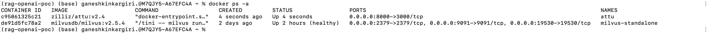
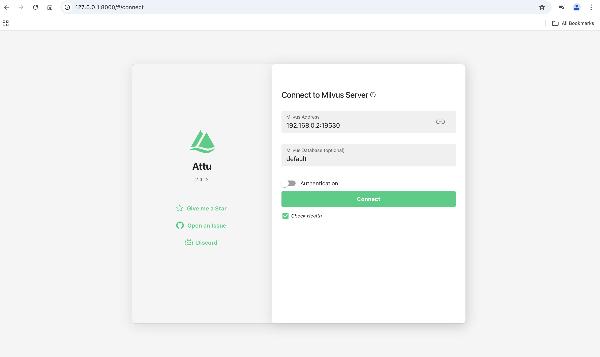
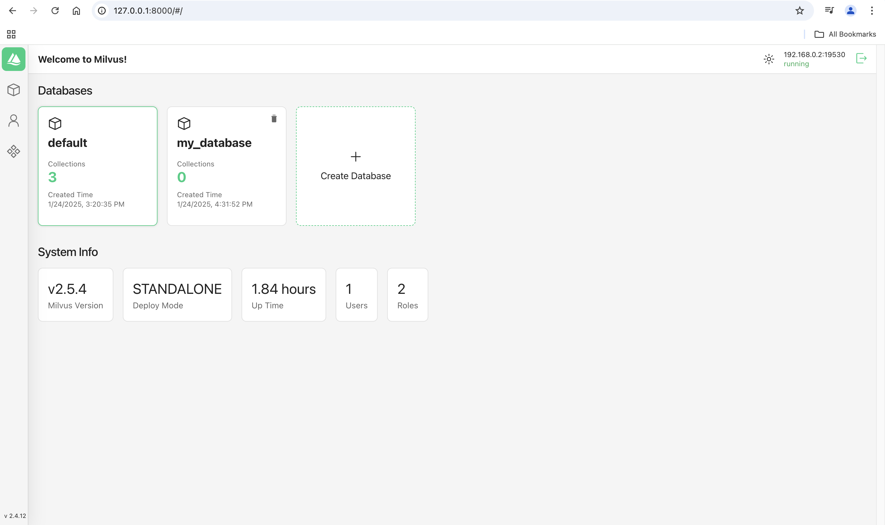

Run Milvus in Docker#
Ref git repo#
Download the installation script#
curl -sfL https://raw.githubusercontent.com/milvus-io/milvus/master/scripts/standalone_embed.sh -o standalone_embed.sh
bash standalone_embed.sh start
create embedEtcd.yaml#
- create embedEtcd.yaml file with below content in the /tmp folder
listen-client-urls: http://0.0.0.0:2379
advertise-client-urls: http://0.0.0.0:2379
quota-backend-bytes: 4294967296
auto-compaction-mode: revision
auto-compaction-retention: '1000'
- create user.yaml in the /tmp folder
touch user.yaml
- Start running the below docker command
sudo docker run -d \
--name milvus-standalone \
--security-opt seccomp:unconfined \
-e ETCD_USE_EMBED=true \
-e ETCD_DATA_DIR=/var/lib/milvus/etcd \
-e ETCD_CONFIG_PATH=/milvus/configs/embedEtcd.yaml \
-e COMMON_STORAGETYPE=local \
-v $(pwd)/volumes/milvus:/var/lib/milvus \
-v $(pwd)/embedEtcd.yaml:/milvus/configs/embedEtcd.yaml \
-v $(pwd)/user.yaml:/milvus/configs/user.yaml \
-p 19530:19530 \
-p 9091:9091 \
-p 2379:2379 \
--health-cmd="curl -f http://localhost:9091/healthz" \
--health-interval=30s \
--health-start-period=90s \
--health-timeout=20s \
--health-retries=3 \
milvusdb/milvus:v2.5.4 \
milvus run standalone
- Check milvus is running or not?
docker ps -a
CONTAINER ID IMAGE COMMAND CREATED STATUS PORTS NAMES
de91d5fc78a2 milvusdb/milvus:v2.5.4 "/tini -- milvus run…" 11 minutes ago Up 11 minutes (healthy) 0.0.0.0:2379->2379/tcp, 0.0.0.0:9091->9091/tcp, 0.0.0.0:19530->19530/tcp milvus-standalone
http://localhost:9091/healthz
http://127.0.0.1:9091/webui
http://127.0.0.1:19530
Running Attu Docker#
Reference document#
docker run --name attu -itd -p 8000:3000 -e HOST_URL=http://0.0.0.0:8000 -e MILVUS_URL=0.0.0.0:19530 zilliz/attu:v2.4

To access attu#
http://127.0.0.1:8000/

Connect to Milvus Server#
Note: For attu Milvus Server IP will be system IPv4 address((localhost or 127.0.0.1 will not work)
Ex: 192.168.0.2:19530
